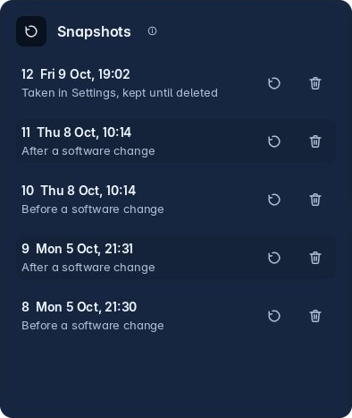
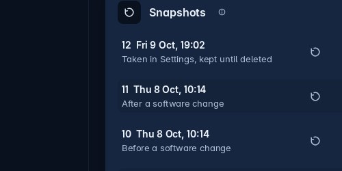
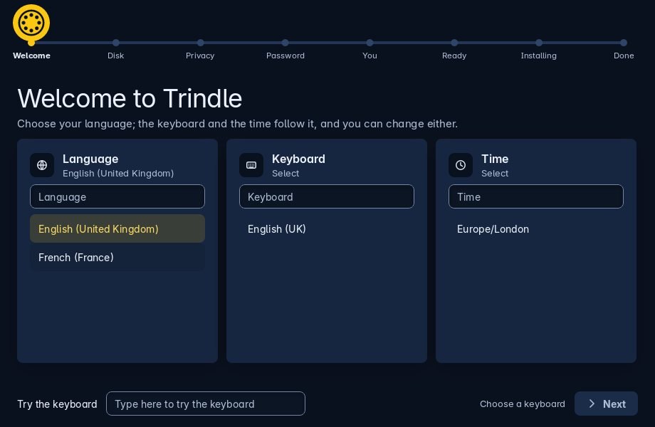

Ways back when something goes wrong
Three things stand behind everything else: a snapshot taken around every software change, a backup of your apps and settings that you can carry to another computer, and a disk you can encrypt.
Snapshots
When the system is on Btrfs, a snapshot of it is taken before and after every software change: installing, updating or removing anything from Debian or a software source. The work is done by snapper, the same tool other Linux systems use for this.
Settings, Snapshots lists them all. The camera button takes one now, which is what you want before trying something you may wish to undo.
Putting one back
- Open Settings and choose Snapshots.Every snapshot is listed with what was happening when it was taken.
- Press the restore arrow beside the one from before things went wrong.It asks a second time to be sure.
- Restart.The system is as it was then. What it was a moment ago is set aside, not deleted, so you can change your mind.

Settings, Snapshots. Every snapshot listed, with what was happening when it was taken.
If the computer will not start
Hold Esc as the computer starts to bring up the boot menu, which stays out of sight when Trindle is the only system on the disk. Choose Trindle snapshots, then a snapshot. It starts as it was then, with a writable layer held in memory: nothing you do there is kept, so you can look round safely. If it is the one you want, restore it in Settings and it becomes the real system.
Other systems on the disk keep their own entries in the same menu, so a computer that dual boots still boots both.

Move your apps sits in Apps' own list, under Software sources.
Take your desktop with you
In Apps, choose Move your apps. Switch on what to take: your apps, their own data, your AppImages and Trindle's settings. One backup file is made in your home folder. Copy it to a USB stick or to cloud storage.
On the other computer, open the same page, press Choose a backup file and pick the file. The apps are installed fresh from Flathub, and their data and your settings are put back. Log out and back in to see every setting.
Trindle Flat makes the same kind of file, ending in .fmpack, so it can open a Trindle backup, and a backup or app list made by Flat can be chosen here.
What goes in
- The list of your Flatpak apps
- Those apps' own settings and data
- Your AppImages
- Trindle's own settings
What does not
- Your documents, pictures and other files
- Wi-Fi passwords
- Your GitHub key
Copy those over yourself. Apps already on the other computer keep their own settings; only the apps it installs get theirs back.
Why an update need not strand you
Three kinds of update, each done in its own place, and each with a way back.
Apps you installed
Open Apps and choose Updates, then press the update button. Flatpak apps are installed for you alone, so a broken app is yours to remove and cannot stop the computer starting.
Debian itself
Apps, then Updates: one button fetches Debian’s own updates and installs them. A snapshot is taken around it, so an update that breaks something can be put back. Debian’s security fixes go in by themselves every day unless you switch off Check for updates in Settings, About this computer. No terminal, and nothing to type.
Trindle
Trindle comes from its own update source, apt.trindle.org, on the same Updates page as everything else: one button, with a snapshot around it. Some updates ask for a restart, and the page says when.
Trindle is built on Debian stable, which is 13 at the time of writing, and comes as a whole operating system.

The two ways to unlock it
The installer can suggest a passphrase if you would rather not invent one. No password is ever refused: a bar shows how strong the one you typed is and roughly how long a computer would take to guess it. It is asked for twice, so a typo cannot lock you out.
A disk nobody else can read
The Trindle Installer offers to encrypt the part of the disk Trindle goes on, where the system and your files live, using LUKS, the standard Linux way of doing it. An encrypted disk cannot be read by anyone who takes it out of this computer.
This is the one choice that cannot be changed afterwards without installing again, so it is worth a moment on the installer's Privacy page rather than pressing Next.
The smaller safeguards
Things put in because they were needed, not because they made a list look longer.
A screen change undoes itself
Change the screen size and Settings asks you to press Keep. Do nothing for fifteen seconds and it goes back, so a wrong choice never leaves you staring at nothing.
The system disk is guarded
Drives can erase a USB stick or another drive, and asks twice. For the disk the computer runs on it offers one change only: making room for a new partition, on Btrfs, after a snapshot.
Changes that need root go through one helper
Settings and Apps ask trindle-admin, through pkexec. It checks every argument it is given and reads passwords from standard input only.
The clipboard forgets
A password copied from a password manager is never kept in the history, and the clipboard is emptied 30 seconds later. The rest of the history clears itself on the schedule you chose.
A record of each session
Kept in .local/state/trindle/session.log in your home folder, which is what to look at when something went wrong.
No account, no telemetry
No account and nothing that tracks you. The update checks happen by themselves, and one switch in Settings, About this computer, turns them off. Everything the computer sends is listed on the privacy page.
Ready to put it on a computer?
What you need, writing the image to a USB stick, and every question the Trindle Installer asks.
